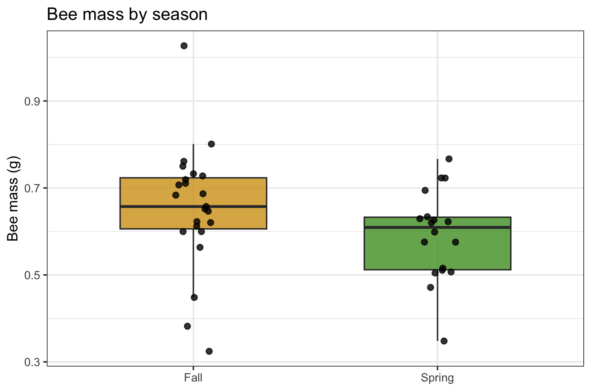
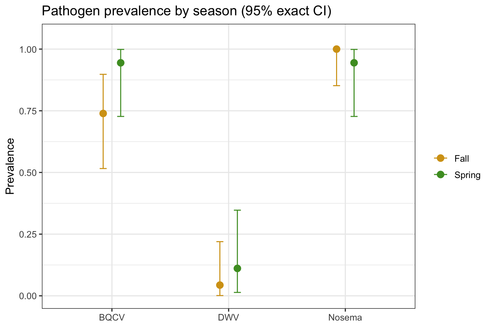
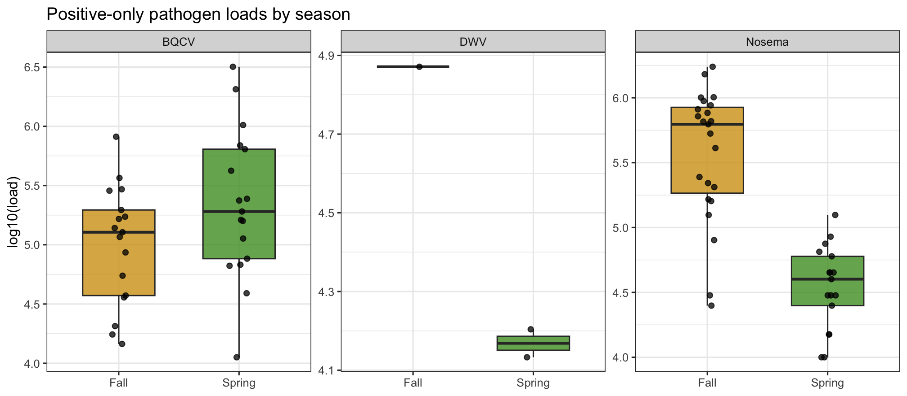
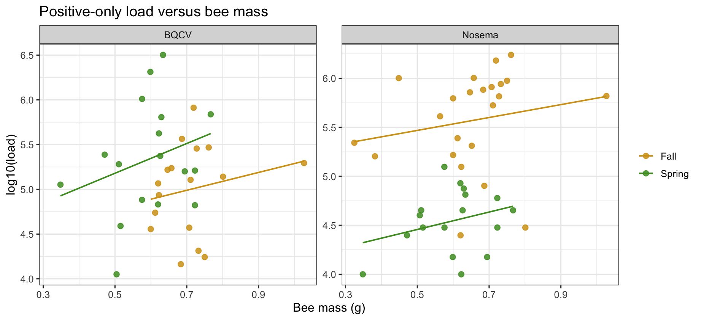
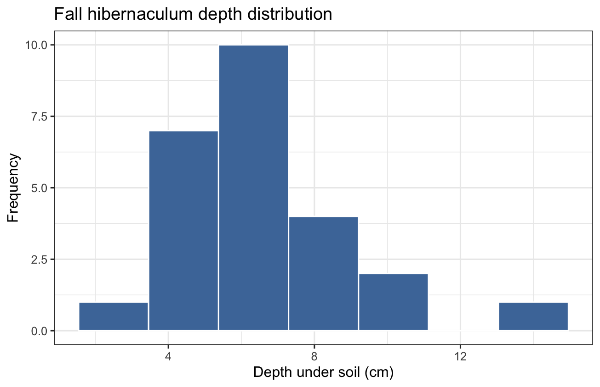
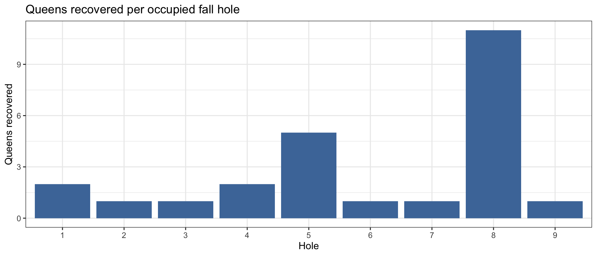
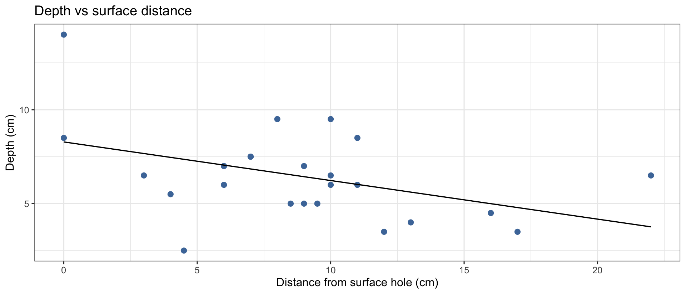
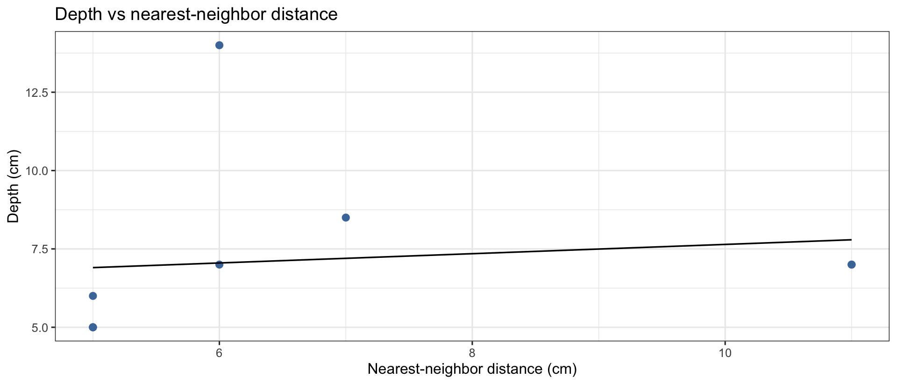
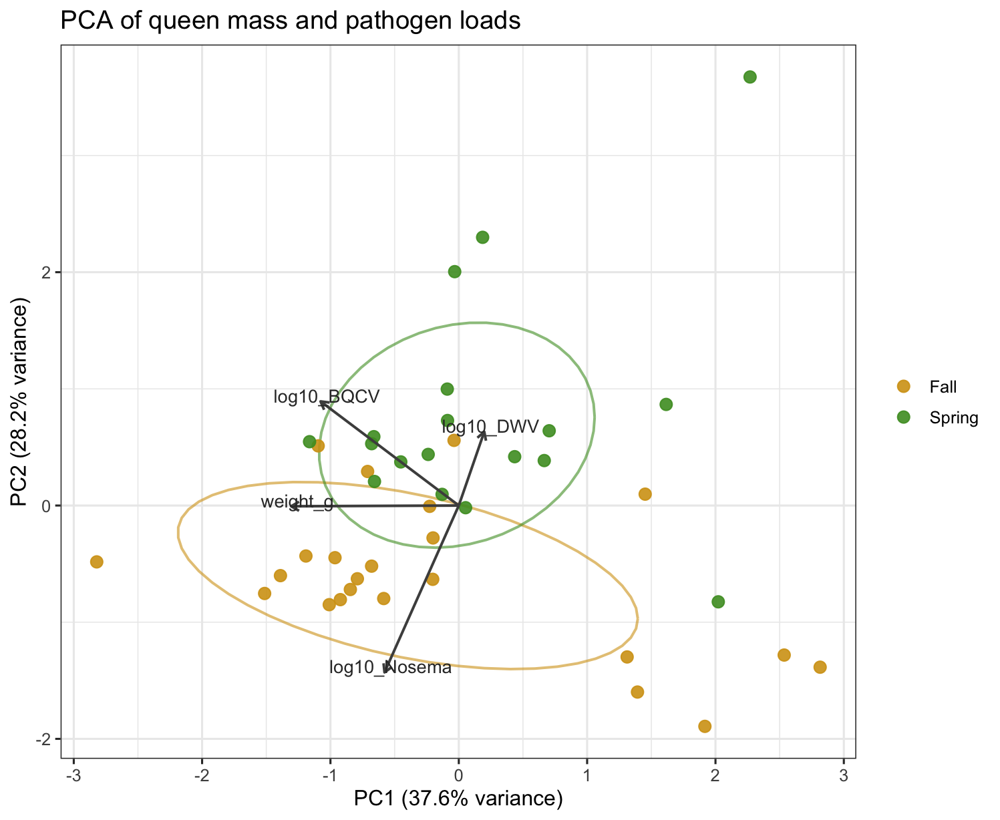
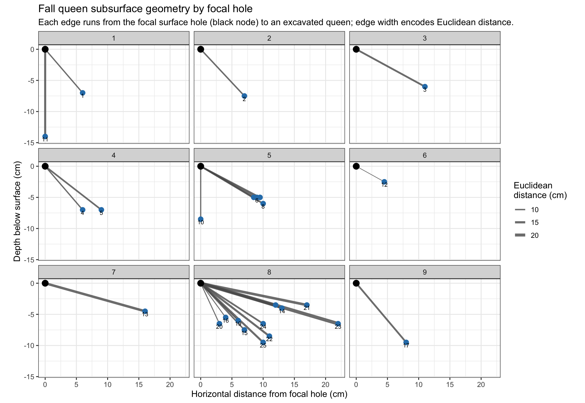

library(readr)
library(dplyr)
library(tidyr)
library(ggplot2)
library(broom)
library(knitr)
library(MASS)
library(tibble)
library(scales)
theme_set(theme_bw(base_size = 12))
options(dplyr.summarise.inform = FALSE)Overwintering queens: combined statistical analysis notebook
Overview
This Quarto notebook recreates the analyses from the prior two analysis runs using only the two uploaded data files:
overwintering_data_clean.csvbeeDist.csv
No GitHub files are used here. The pathogen dataset is already merged with season and queen mass, so the workflow starts from that cleaned file. The fall spatial file is used for the hibernaculum structure and geometry/network analyses.
Data notes
overwintering_data_clean.csvis in long format, with one row per queen-pathogen combination.beeDist.csvis a fall-only spatial dataset.- The spatial dataset includes a
weight_gcolumn, but the analyses below do not use that field; the season/pathogen models use the mass column already stored inoverwintering_data_clean.csv. - The fall/spring designation already appears in the cleaned pathogen file, so no GitHub lookup or separate season recoding is needed.
pathogen_df <- read_csv("data/overwintering_data_clean.csv", show_col_types = FALSE) %>%
rename(
sample_id = ID,
season = Season,
pathogen = pathogen,
load = load,
weight_g = `Bee_Mass_Est_g.`
) %>%
mutate(
season = factor(season, levels = c("Fall", "Spring")),
positive = replace_na(load, 0) > 0,
log10_load = if_else(load > 0, log10(load), NA_real_),
log10_load_plus1 = log10(replace_na(load, 0) + 1)
) %>%
dplyr::select(sample_id, season, pathogen, load, weight_g, positive, log10_load, log10_load_plus1, time)
weight_df <- pathogen_df %>%
distinct(sample_id, season, weight_g)
fall_holes <- read_csv("data/beeDist.csv", show_col_types = FALSE) %>%
rename(
hole = Hole,
nest_id = ID,
lab_id = LabID,
surface_distance_cm = distance_from_hole_on_surface_cm,
nearest_neighbor_cm = nearest_neighbor
) %>%
mutate(
hole = factor(hole),
euclidean_cm = sqrt(depth_cm^2 + surface_distance_cm^2)
)
exact_ci <- function(x, n) {
bt <- binom.test(x, n)
tibble(ci_low = bt$conf.int[1], ci_high = bt$conf.int[2])
}data_overview <- tibble(
dataset = c("Merged pathogen file", "Merged pathogen file", "Merged pathogen file", "Fall spatial file", "Fall spatial file"),
metric = c("Rows", "Unique queens", "Unique pathogens", "Rows", "Occupied holes"),
value = c(nrow(pathogen_df), n_distinct(pathogen_df$sample_id), n_distinct(pathogen_df$pathogen), nrow(fall_holes), n_distinct(fall_holes$hole))
)
data_overview %>% kable()| dataset | metric | value |
|---|---|---|
| Merged pathogen file | Rows | 123 |
| Merged pathogen file | Unique queens | 41 |
| Merged pathogen file | Unique pathogens | 3 |
| Fall spatial file | Rows | 25 |
| Fall spatial file | Occupied holes | 9 |
1. Bee mass by season
This reproduces the season-level mass comparison using one mass value per queen.
weight_summary <- weight_df %>%
group_by(season) %>%
summarise(
n = sum(!is.na(weight_g)),
mean_g = mean(weight_g, na.rm = TRUE),
sd_g = sd(weight_g, na.rm = TRUE),
median_g = median(weight_g, na.rm = TRUE),
min_g = min(weight_g, na.rm = TRUE),
max_g = max(weight_g, na.rm = TRUE)
)
weight_welch <- t.test(weight_g ~ season, data = weight_df)
weight_wilcox <- wilcox.test(weight_g ~ season, data = weight_df, exact = FALSE)
weight_summary %>% kable(digits = 3)| season | n | mean_g | sd_g | median_g | min_g | max_g |
|---|---|---|---|---|---|---|
| Fall | 23 | 0.654 | 0.143 | 0.657 | 0.324 | 1.027 |
| Spring | 18 | 0.591 | 0.104 | 0.609 | 0.348 | 0.767 |
tibble(
comparison = "Fall vs Spring mass",
test = c("Welch t-test", "Wilcoxon rank-sum"),
statistic = c(unname(weight_welch$statistic), unname(weight_wilcox$statistic)),
p_value = c(weight_welch$p.value, weight_wilcox$p.value)
) %>% kable(digits = 3)| comparison | test | statistic | p_value |
|---|---|---|---|
| Fall vs Spring mass | Welch t-test | 1.615 | 0.114 |
| Fall vs Spring mass | Wilcoxon rank-sum | 275.000 | 0.076 |
ggplot(weight_df, aes(season, weight_g, fill = season)) +
geom_boxplot(width = 0.6, alpha = 0.8, outlier.shape = NA) +
geom_jitter(width = 0.08, height = 0, size = 2, alpha = 0.8) +
scale_fill_manual(values = c("Fall" = "#D4A017", "Spring" = "#4C9A2A")) +
labs(x = NULL, y = "Bee mass (g)", title = "Bee mass by season") +
theme(legend.position = "none")
2. Pathogen prevalence by season
Prevalence is summarized as the fraction of queens with non-zero load for each pathogen within each season. Exact binomial confidence intervals are shown, and season contrasts are tested with Fisher’s exact tests.
prevalence_summary <- pathogen_df %>%
group_by(pathogen, season) %>%
summarise(
positive_n = sum(positive),
total_n = n(),
prevalence = positive_n / total_n,
.groups = "drop"
) %>%
rowwise() %>%
mutate(ci = list(exact_ci(positive_n, total_n))) %>%
unnest_wider(ci) %>%
ungroup()
prevalence_tests <- pathogen_df %>%
group_by(pathogen) %>%
group_modify(~{
tab <- table(.x$season, .x$positive)
ft <- fisher.test(tab)
tibble(
fall_positive = sum(.x$positive[.x$season == "Fall"]),
fall_n = sum(.x$season == "Fall"),
spring_positive = sum(.x$positive[.x$season == "Spring"]),
spring_n = sum(.x$season == "Spring"),
odds_ratio = unname(ft$estimate),
fisher_p = ft$p.value
)
}) %>%
ungroup()
prevalence_summary %>% kable(digits = 3)| pathogen | season | positive_n | total_n | prevalence | ci_low | ci_high |
|---|---|---|---|---|---|---|
| BQCV | Fall | 17 | 23 | 0.739 | 0.516 | 0.898 |
| BQCV | Spring | 17 | 18 | 0.944 | 0.727 | 0.999 |
| DWV | Fall | 1 | 23 | 0.043 | 0.001 | 0.219 |
| DWV | Spring | 2 | 18 | 0.111 | 0.014 | 0.347 |
| Nosema | Fall | 23 | 23 | 1.000 | 0.852 | 1.000 |
| Nosema | Spring | 17 | 18 | 0.944 | 0.727 | 0.999 |
prevalence_tests %>% kable(digits = 3)| pathogen | fall_positive | fall_n | spring_positive | spring_n | odds_ratio | fisher_p |
|---|---|---|---|---|---|---|
| BQCV | 17 | 23 | 17 | 18 | 5.777 | 0.112 |
| DWV | 1 | 23 | 2 | 18 | 2.683 | 0.573 |
| Nosema | 23 | 23 | 17 | 18 | 0.000 | 0.439 |
ggplot(prevalence_summary, aes(pathogen, prevalence, color = season)) +
geom_point(position = position_dodge(width = 0.3), size = 3) +
geom_errorbar(
aes(ymin = ci_low, ymax = ci_high),
position = position_dodge(width = 0.3),
width = 0.12,
linewidth = 0.5
) +
scale_color_manual(values = c("Fall" = "#D4A017", "Spring" = "#4C9A2A")) +
coord_cartesian(ylim = c(0, 1.05)) +
labs(
x = NULL,
y = "Prevalence",
title = "Pathogen prevalence by season (95% exact CI)"
) +
theme(legend.title = element_blank())
3. Positive-only pathogen loads
These analyses use only samples with non-zero load and compare seasons on the log10 scale. Both Welch tests and Wilcoxon rank-sum tests are reported. DWV remains sparse, so that comparison is mostly descriptive.
positive_load_summary <- pathogen_df %>%
filter(positive) %>%
group_by(pathogen, season) %>%
summarise(
n_positive = n(),
mean_log10 = mean(log10_load, na.rm = TRUE),
median_log10 = median(log10_load, na.rm = TRUE),
.groups = "drop"
)
load_tests <- pathogen_df %>%
filter(positive) %>%
group_by(pathogen) %>%
group_modify(~{
fall_vals <- .x %>% filter(season == "Fall") %>% pull(log10_load) %>% na.omit()
spring_vals <- .x %>% filter(season == "Spring") %>% pull(log10_load) %>% na.omit()
welch_t <- if (length(fall_vals) > 1 && length(spring_vals) > 1) {
unname(t.test(fall_vals, spring_vals)$statistic)
} else {
NA_real_
}
welch_p <- if (length(fall_vals) > 1 && length(spring_vals) > 1) {
t.test(fall_vals, spring_vals)$p.value
} else {
NA_real_
}
wilcoxon_u <- if (length(fall_vals) > 0 && length(spring_vals) > 0) {
unname(wilcox.test(fall_vals, spring_vals, exact = FALSE)$statistic)
} else {
NA_real_
}
wilcoxon_p <- if (length(fall_vals) > 0 && length(spring_vals) > 0) {
wilcox.test(fall_vals, spring_vals, exact = FALSE)$p.value
} else {
NA_real_
}
tibble(
n_fall_positive = length(fall_vals),
n_spring_positive = length(spring_vals),
welch_t = welch_t,
welch_p = welch_p,
wilcoxon_u = wilcoxon_u,
wilcoxon_p = wilcoxon_p
)
}) %>%
ungroup()
positive_load_summary %>% kable(digits = 3)| pathogen | season | n_positive | mean_log10 | median_log10 |
|---|---|---|---|---|
| BQCV | Fall | 17 | 4.999 | 5.106 |
| BQCV | Spring | 17 | 5.340 | 5.281 |
| DWV | Fall | 1 | 4.871 | 4.871 |
| DWV | Spring | 2 | 4.168 | 4.168 |
| Nosema | Fall | 23 | 5.570 | 5.796 |
| Nosema | Spring | 17 | 4.543 | 4.602 |
load_tests %>% kable(digits = 3)| pathogen | n_fall_positive | n_spring_positive | welch_t | welch_p | wilcoxon_u | wilcoxon_p |
|---|---|---|---|---|---|---|
| BQCV | 17 | 17 | -1.745 | 0.091 | 102.0 | 0.148 |
| DWV | 1 | 2 | NA | NA | 2.0 | 0.540 |
| Nosema | 23 | 17 | 7.842 | 0.000 | 365.5 | 0.000 |
ggplot(pathogen_df %>% filter(positive), aes(season, log10_load, fill = season)) +
geom_boxplot(width = 0.6, alpha = 0.8, outlier.shape = NA) +
geom_jitter(width = 0.08, height = 0, size = 1.8, alpha = 0.75) +
scale_fill_manual(values = c("Fall" = "#D4A017", "Spring" = "#4C9A2A")) +
facet_wrap(~ pathogen, scales = "free_y") +
labs(x = NULL, y = "log10(load)", title = "Positive-only pathogen loads by season") +
theme(legend.position = "none")
4. Positive-only load models with bee mass as a covariate
These models ask whether season still explains variation in pathogen load after accounting for queen mass. Because DWV has so few positive cases, the positive-only models are restricted to BQCV and Nosema.
positive_load_models <- pathogen_df %>%
filter(pathogen %in% c("BQCV", "Nosema"), positive) %>%
group_by(pathogen) %>%
group_modify(~{
fit <- lm(log10_load ~ season + weight_g, data = .x)
broom::tidy(fit) %>%
mutate(
n = nrow(.x),
r_squared = summary(fit)$r.squared
)
}) %>%
ungroup()
positive_load_models %>% kable(digits = 3)| pathogen | term | estimate | std.error | statistic | p.value | n | r_squared |
|---|---|---|---|---|---|---|---|
| BQCV | (Intercept) | 4.044 | 0.702 | 5.763 | 0.000 | 34 | 0.140 |
| BQCV | seasonSpring | 0.493 | 0.222 | 2.225 | 0.034 | 34 | 0.140 |
| BQCV | weight_g | 1.346 | 0.970 | 1.388 | 0.175 | 34 | 0.140 |
| Nosema | (Intercept) | 5.097 | 0.370 | 13.781 | 0.000 | 40 | 0.605 |
| Nosema | seasonSpring | -0.985 | 0.142 | -6.935 | 0.000 | 40 | 0.605 |
| Nosema | weight_g | 0.723 | 0.549 | 1.318 | 0.196 | 40 | 0.605 |
ggplot(
pathogen_df %>% filter(pathogen %in% c("BQCV", "Nosema"), positive),
aes(weight_g, log10_load, color = season)
) +
geom_point(size = 2.2, alpha = 0.85) +
geom_smooth(method = "lm", se = FALSE, linewidth = 0.7) +
scale_color_manual(values = c("Fall" = "#D4A017", "Spring" = "#4C9A2A")) +
facet_wrap(~ pathogen, scales = "free_y") +
labs(
x = "Bee mass (g)",
y = "log10(load)",
title = "Positive-only load versus bee mass"
) +
theme(legend.title = element_blank())
5. Exploratory weight difference by infection status
This section compares queen mass between infected and uninfected bees for each pathogen. Some negative groups are small, so this is best treated as exploratory.
weight_by_infection <- pathogen_df %>%
group_by(pathogen) %>%
group_modify(~{
pos_w <- .x %>% filter(positive) %>% pull(weight_g) %>% na.omit()
neg_w <- .x %>% filter(!positive) %>% pull(weight_g) %>% na.omit()
welch_t <- if (length(pos_w) > 1 && length(neg_w) > 1) {
unname(t.test(pos_w, neg_w)$statistic)
} else {
NA_real_
}
welch_p <- if (length(pos_w) > 1 && length(neg_w) > 1) {
t.test(pos_w, neg_w)$p.value
} else {
NA_real_
}
wilcox_u <- if (length(pos_w) > 1 && length(neg_w) > 1) {
unname(wilcox.test(pos_w, neg_w, exact = FALSE)$statistic)
} else {
NA_real_
}
wilcox_p <- if (length(pos_w) > 1 && length(neg_w) > 1) {
wilcox.test(pos_w, neg_w, exact = FALSE)$p.value
} else {
NA_real_
}
tibble(
n_positive = length(pos_w),
n_negative = length(neg_w),
mean_weight_positive_g = mean(pos_w),
mean_weight_negative_g = mean(neg_w),
welch_t = welch_t,
welch_p = welch_p,
wilcoxon_u = wilcox_u,
wilcoxon_p = wilcox_p
)
}) %>%
ungroup()
weight_by_infection %>% kable(digits = 3)| pathogen | n_positive | n_negative | mean_weight_positive_g | mean_weight_negative_g | welch_t | welch_p | wilcoxon_u | wilcoxon_p |
|---|---|---|---|---|---|---|---|---|
| BQCV | 34 | 7 | 0.653 | 0.497 | 3.190 | 0.012 | 201 | 0.005 |
| DWV | 3 | 38 | 0.648 | 0.625 | 0.672 | 0.531 | 61 | 0.861 |
| Nosema | 40 | 1 | 0.629 | 0.504 | NA | NA | NA | NA |
6. Fall-only hibernaculum structure
Spring queens were collected with tents, so the spatial analyses are restricted to the fall spatial dataset.
hole_occupancy <- fall_holes %>%
count(hole, name = "queens_in_hole")
fall_spatial_summary <- tibble(
metric = c(
"Queens in spatial dataset",
"Occupied holes",
"Mean queens per occupied hole",
"Maximum queens in one hole",
"Mean depth (cm)",
"Median depth (cm)",
"Mean surface distance (cm)",
"Nearest-neighbor observations"
),
value = c(
nrow(fall_holes),
n_distinct(fall_holes$hole),
mean(hole_occupancy$queens_in_hole),
max(hole_occupancy$queens_in_hole),
mean(fall_holes$depth_cm, na.rm = TRUE),
median(fall_holes$depth_cm, na.rm = TRUE),
mean(fall_holes$surface_distance_cm, na.rm = TRUE),
sum(!is.na(fall_holes$nearest_neighbor_cm))
)
)
fall_spatial_correlations <- tibble(
comparison = c(
"Depth vs surface distance",
"Depth vs nearest-neighbor distance",
"Surface distance vs nearest-neighbor distance"
),
rho = c(
cor(fall_holes$depth_cm, fall_holes$surface_distance_cm, method = "spearman", use = "complete.obs"),
cor(fall_holes$depth_cm, fall_holes$nearest_neighbor_cm, method = "spearman", use = "complete.obs"),
cor(fall_holes$surface_distance_cm, fall_holes$nearest_neighbor_cm, method = "spearman", use = "complete.obs")
),
p_value = c(
cor.test(fall_holes$depth_cm, fall_holes$surface_distance_cm, method = "spearman", exact = FALSE)$p.value,
cor.test(fall_holes$depth_cm, fall_holes$nearest_neighbor_cm, method = "spearman", exact = FALSE)$p.value,
cor.test(fall_holes$surface_distance_cm, fall_holes$nearest_neighbor_cm, method = "spearman", exact = FALSE)$p.value
)
)
fall_spatial_summary %>% kable(digits = 3)| metric | value |
|---|---|
| Queens in spatial dataset | 25.000 |
| Occupied holes | 9.000 |
| Mean queens per occupied hole | 2.778 |
| Maximum queens in one hole | 11.000 |
| Mean depth (cm) | 6.480 |
| Median depth (cm) | 6.500 |
| Mean surface distance (cm) | 8.780 |
| Nearest-neighbor observations | 9.000 |
hole_occupancy %>% kable()| hole | queens_in_hole |
|---|---|
| 1 | 2 |
| 2 | 1 |
| 3 | 1 |
| 4 | 2 |
| 5 | 5 |
| 6 | 1 |
| 7 | 1 |
| 8 | 11 |
| 9 | 1 |
fall_spatial_correlations %>% kable(digits = 3)| comparison | rho | p_value |
|---|---|---|
| Depth vs surface distance | -0.380 | 0.061 |
| Depth vs nearest-neighbor distance | 0.736 | 0.024 |
| Surface distance vs nearest-neighbor distance | -0.547 | 0.127 |
ggplot(fall_holes, aes(depth_cm)) +
geom_histogram(bins = 7, fill = "#4C78A8", color = "white") +
labs(
x = "Depth under soil (cm)",
y = "Frequency",
title = "Fall hibernaculum depth distribution"
)
ggplot(hole_occupancy, aes(hole, queens_in_hole)) +
geom_col(fill = "#4C78A8") +
labs(
x = "Hole",
y = "Queens recovered",
title = "Queens recovered per occupied fall hole"
)
ggplot(fall_holes, aes(surface_distance_cm, depth_cm)) +
geom_point(size = 2.3, color = "#4C78A8") +
geom_smooth(method = "lm", se = FALSE, color = "black", linewidth = 0.6) +
labs(
x = "Distance from surface hole (cm)",
y = "Depth (cm)",
title = "Depth vs surface distance"
)
ggplot(
fall_holes %>% filter(!is.na(nearest_neighbor_cm)),
aes(nearest_neighbor_cm, depth_cm)
) +
geom_point(size = 2.3, color = "#4C78A8") +
geom_smooth(method = "lm", se = FALSE, color = "black", linewidth = 0.6) +
labs(
x = "Nearest-neighbor distance (cm)",
y = "Depth (cm)",
title = "Depth vs nearest-neighbor distance"
)
7. Multivariate separation of Fall and Spring queens
This reproduces the follow-up multivariate analysis using one row per queen and four predictors:
- queen mass
log10(BQCV + 1)log10(DWV + 1)log10(Nosema + 1)
The +1 transformation keeps zero-load queens in the ordination and classification steps.
multivar_df <- pathogen_df %>%
mutate(load = replace_na(load, 0)) %>%
dplyr::select(sample_id, season, pathogen, load, weight_g) %>%
pivot_wider(names_from = pathogen, values_from = load) %>%
mutate(
log10_BQCV = log10(BQCV + 1),
log10_DWV = log10(DWV + 1),
log10_Nosema = log10(Nosema + 1)
) %>%
dplyr::select(sample_id, season, weight_g, log10_BQCV, log10_DWV, log10_Nosema) %>%
drop_na()
multivariate_summary <- multivar_df %>%
group_by(season) %>%
summarise(
n = n(),
mean_weight_g = mean(weight_g),
mean_log10_BQCV = mean(log10_BQCV),
mean_log10_DWV = mean(log10_DWV),
mean_log10_Nosema = mean(log10_Nosema)
)
multivariate_summary %>% kable(digits = 3)| season | n | mean_weight_g | mean_log10_BQCV | mean_log10_DWV | mean_log10_Nosema |
|---|---|---|---|---|---|
| Fall | 23 | 0.654 | 3.695 | 0.212 | 5.570 |
| Spring | 18 | 0.591 | 5.043 | 0.463 | 4.291 |
7.1 PCA ordination
pca_fit <- prcomp(
multivar_df %>% dplyr::select(weight_g, log10_BQCV, log10_DWV, log10_Nosema),
center = TRUE,
scale. = TRUE
)
scores <- as_tibble(pca_fit$x[, 1:2]) %>%
bind_cols(multivar_df %>% dplyr::select(sample_id, season))
loadings <- as.data.frame(pca_fit$rotation[, 1:2]) %>%
rownames_to_column("variable")
var_explained <- (pca_fit$sdev^2) / sum(pca_fit$sdev^2)
arrow_scale <- 1.8
loadings_plot <- loadings %>%
mutate(
PC1 = PC1 * arrow_scale,
PC2 = PC2 * arrow_scale
)
season_centroids <- scores %>%
group_by(season) %>%
summarise(mean_PC1 = mean(PC1), mean_PC2 = mean(PC2))
loadings %>% kable(digits = 3)| variable | PC1 | PC2 |
|---|---|---|
| weight_g | -0.726 | -0.004 |
| log10_BQCV | -0.598 | 0.496 |
| log10_DWV | 0.110 | 0.351 |
| log10_Nosema | -0.321 | -0.794 |
season_centroids %>% kable(digits = 3)| season | mean_PC1 | mean_PC2 |
|---|---|---|
| Fall | -0.164 | -0.607 |
| Spring | 0.209 | 0.775 |
ggplot(scores, aes(PC1, PC2, color = season)) +
stat_ellipse(level = 0.68, linewidth = 0.7, alpha = 0.6, show.legend = FALSE) +
geom_point(size = 2.8, alpha = 0.9) +
geom_segment(
data = loadings_plot,
aes(x = 0, y = 0, xend = PC1, yend = PC2),
inherit.aes = FALSE,
arrow = arrow(length = grid::unit(0.18, "cm")),
linewidth = 0.7,
color = "gray30"
) +
geom_text(
data = loadings_plot,
aes(x = PC1, y = PC2, label = variable),
inherit.aes = FALSE,
size = 3.6,
color = "gray20",
nudge_x = 0.05,
nudge_y = 0.05
) +
scale_color_manual(values = c("Fall" = "#D4A017", "Spring" = "#4C9A2A")) +
labs(
title = "PCA of queen mass and pathogen loads",
x = paste0("PC1 (", round(100 * var_explained[1], 1), "% variance)"),
y = paste0("PC2 (", round(100 * var_explained[2], 1), "% variance)"),
color = NULL
)
7.2 Exploratory season prediction with LDA
lda_fit <- MASS::lda(
season ~ weight_g + log10_BQCV + log10_DWV + log10_Nosema,
data = multivar_df
)
lda_cv <- MASS::lda(
season ~ weight_g + log10_BQCV + log10_DWV + log10_Nosema,
data = multivar_df,
CV = TRUE
)
conf_mat <- table(
Observed = multivar_df$season,
Predicted = lda_cv$class
)
accuracy <- mean(lda_cv$class == multivar_df$season)
lda_coefficients <- as.data.frame(lda_fit$scaling) %>%
tibble::rownames_to_column("term")
lda_coefficients %>% knitr::kable(digits = 3)| term | LD1 |
|---|---|
| weight_g | -4.524 |
| log10_BQCV | 0.407 |
| log10_DWV | 0.184 |
| log10_Nosema | -0.881 |
as.data.frame.matrix(conf_mat) %>%
tibble::rownames_to_column("Observed") %>%
knitr::kable()| Observed | Fall | Spring |
|---|---|---|
| Fall | 21 | 2 |
| Spring | 4 | 14 |
tibble::tibble(
metric = "Leave-one-out cross-validated accuracy",
value = accuracy
) %>%
knitr::kable(digits = 3)| metric | value |
|---|---|
| Leave-one-out cross-validated accuracy | 0.854 |
8. Fall subsurface geometry network diagram
This reproduces the network-style geometry figure for fall bees. Each queen is linked to its focal surface hole using the right-triangle interpretation:
- horizontal leg =
surface_distance_cm - vertical leg =
depth_cm - edge length =
sqrt(depth_cm^2 + surface_distance_cm^2)
fall_distance_summary <- fall_holes %>%
summarise(
n_queens = n(),
n_holes = n_distinct(hole),
mean_depth_cm = mean(depth_cm, na.rm = TRUE),
mean_surface_distance_cm = mean(surface_distance_cm, na.rm = TRUE),
mean_euclidean_cm = mean(euclidean_cm, na.rm = TRUE),
median_euclidean_cm = median(euclidean_cm, na.rm = TRUE),
max_euclidean_cm = max(euclidean_cm, na.rm = TRUE)
)
by_hole_distance <- fall_holes %>%
group_by(hole) %>%
summarise(
queens_in_hole = n(),
mean_depth_cm = mean(depth_cm),
mean_surface_distance_cm = mean(surface_distance_cm),
mean_euclidean_cm = mean(euclidean_cm)
)
fall_distance_summary %>% kable(digits = 3)| n_queens | n_holes | mean_depth_cm | mean_surface_distance_cm | mean_euclidean_cm | median_euclidean_cm | max_euclidean_cm |
|---|---|---|---|---|---|---|
| 25 | 9 | 6.48 | 8.78 | 11.624 | 11.402 | 22.94 |
by_hole_distance %>% kable(digits = 3)| hole | queens_in_hole | mean_depth_cm | mean_surface_distance_cm | mean_euclidean_cm |
|---|---|---|---|---|
| 1 | 2 | 10.500 | 3.000 | 11.610 |
| 2 | 1 | 7.500 | 7.000 | 10.259 |
| 3 | 1 | 6.000 | 11.000 | 12.530 |
| 4 | 2 | 7.000 | 7.500 | 10.311 |
| 5 | 5 | 5.900 | 7.400 | 10.211 |
| 6 | 1 | 2.500 | 4.500 | 5.148 |
| 7 | 1 | 4.500 | 16.000 | 16.621 |
| 8 | 11 | 6.136 | 10.455 | 12.611 |
| 9 | 1 | 9.500 | 8.000 | 12.420 |
hole_nodes <- fall_holes %>%
distinct(hole) %>%
mutate(x = 0, y = 0)
ggplot(fall_holes) +
geom_segment(
aes(
x = 0,
y = 0,
xend = surface_distance_cm,
yend = -depth_cm,
linewidth = euclidean_cm
),
color = "gray35",
alpha = 0.8
) +
geom_point(
data = hole_nodes,
aes(x = x, y = y),
inherit.aes = FALSE,
size = 3.6,
color = "black"
) +
geom_point(
aes(x = surface_distance_cm, y = -depth_cm),
size = 2.8,
color = "#2C7FB8"
) +
geom_text(
aes(x = surface_distance_cm, y = -depth_cm, label = lab_id),
nudge_y = -0.45,
size = 2.8,
check_overlap = TRUE
) +
scale_linewidth_continuous(range = c(0.4, 2.2)) +
coord_equal() +
facet_wrap(~ hole, scales = "fixed") +
labs(
title = "Fall queen subsurface geometry by focal hole",
subtitle = "Each edge runs from the focal surface hole (black node) to an excavated queen; edge width encodes Euclidean distance.",
x = "Horizontal distance from focal hole (cm)",
y = "Depth below surface (cm)",
linewidth = "Euclidean\ndistance (cm)"
)
9. Reproducibility
sessionInfo()R version 4.2.3 (2023-03-15)
Platform: aarch64-apple-darwin20 (64-bit)
Running under: macOS 14.8.1
Matrix products: default
BLAS: /Library/Frameworks/R.framework/Versions/4.2-arm64/Resources/lib/libRblas.0.dylib
LAPACK: /Library/Frameworks/R.framework/Versions/4.2-arm64/Resources/lib/libRlapack.dylib
locale:
[1] en_US.UTF-8/en_US.UTF-8/en_US.UTF-8/C/en_US.UTF-8/en_US.UTF-8
attached base packages:
[1] stats graphics grDevices utils datasets methods base
other attached packages:
[1] scales_1.4.0 tibble_3.2.1 MASS_7.3-58.2 knitr_1.51 broom_1.0.4
[6] ggplot2_4.0.1 tidyr_1.3.0 dplyr_1.1.4 readr_2.1.4
loaded via a namespace (and not attached):
[1] pillar_1.9.0 compiler_4.2.3 RColorBrewer_1.1-3 tools_4.2.3
[5] bit_4.0.5 digest_0.6.31 lattice_0.20-45 nlme_3.1-162
[9] jsonlite_2.0.0 evaluate_1.0.5 lifecycle_1.0.5 gtable_0.3.6
[13] mgcv_1.8-42 pkgconfig_2.0.3 rlang_1.1.7 Matrix_1.6-5
[17] cli_3.6.5 parallel_4.2.3 yaml_2.3.12 xfun_0.56
[21] fastmap_1.1.1 withr_3.0.2 generics_0.1.3 vctrs_0.6.5
[25] htmlwidgets_1.6.2 hms_1.1.3 bit64_4.0.5 grid_4.2.3
[29] tidyselect_1.2.0 glue_1.6.2 R6_2.6.1 fansi_1.0.4
[33] otel_0.2.0 vroom_1.6.3 rmarkdown_2.30 tzdb_0.4.0
[37] purrr_1.0.1 farver_2.1.1 magrittr_2.0.3 splines_4.2.3
[41] backports_1.4.1 htmltools_0.5.9 labeling_0.4.2 S7_0.2.1
[45] utf8_1.2.3 crayon_1.5.2